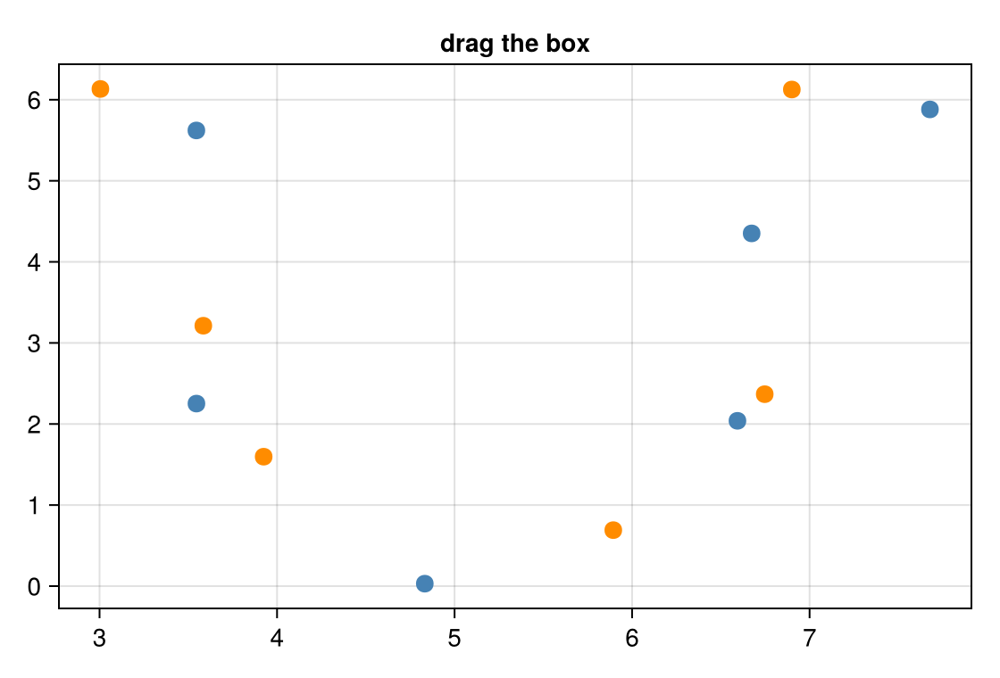

Box-select scatter
Drag the box, or one of its corner handles, and release. The last cell counts the points inside by group and averages their coordinates.
picks is a Vector{ElementEvent} with one event per point inside the box, carrying that point's payload (group, x, y), so count(e -> e.group == "A", picks) counts one group. The events also work as indices into your data, so xs[picks] is the x of the points in the box. An empty box gives [] rather than nothing. See Brush a region.
Notebook as text
Drag the box, and the last cell counts the points inside it by group.
Plot the points with each point's group in its payload, and add a box that selects them.
begin
npts = 12
xs = [2 + 6 * (i / npts) + 0.6 * sin(i) for i in 1:npts]
ys = [3 + 3 * cos(i / 2) + 0.5 * (i % 3) for i in 1:npts]
grp = [iseven(i) ? "A" : "B" for i in 1:npts]
fig = Figure(size = (560, 380))
ax = Axis(fig[1, 1]; title = "drag the box")
s = scatter!(ax, xs, ys; color = map(g -> g == "A" ? :steelblue : :darkorange, grp), markersize = 14)
pts = interactables(
s;
id = :pts,
payloads = [(; group = grp[i], x = xs[i], y = ys[i]) for i in eachindex(xs)],
)
roi = ROIInteractable(ax; bounds = (3.0, 6.0, 1.5, 5.5), selects = :pts)
nothing
end@bind picks stores the points inside the box when you release it.
@bind picks masque(fig, pts, roi)
This cell responds when you release the box.
if isnothing(picks) || isempty(picks)
"Adjust the box to select points."
else
n = length(picks)
na = count(e -> e.group == "A", picks)
mx = round(sum(xs[picks]) / n; digits = 2)
my = round(sum(ys[picks]) / n; digits = 2)
"$(n) points: group A $(na), group B $(n - na); mean ($(mx), $(my))"
endAdjust the box to select points.Variations
- Dragging the middle of a side resizes the box in that one direction.
- A box can also select heatmap or image cells: name a grid layer in
selects, as in Image ROI. - To compare the selected points with the rest, plot a histogram from them, as in Compare a cluster.
selects must name a point or grid layer; selects = :bars raises ArgumentError. With a ViewInteractable on the same axis, Shift+drag pans instead of moving the box; see Pan and orbit. For the axes a box works on, see Supported plots and axes.